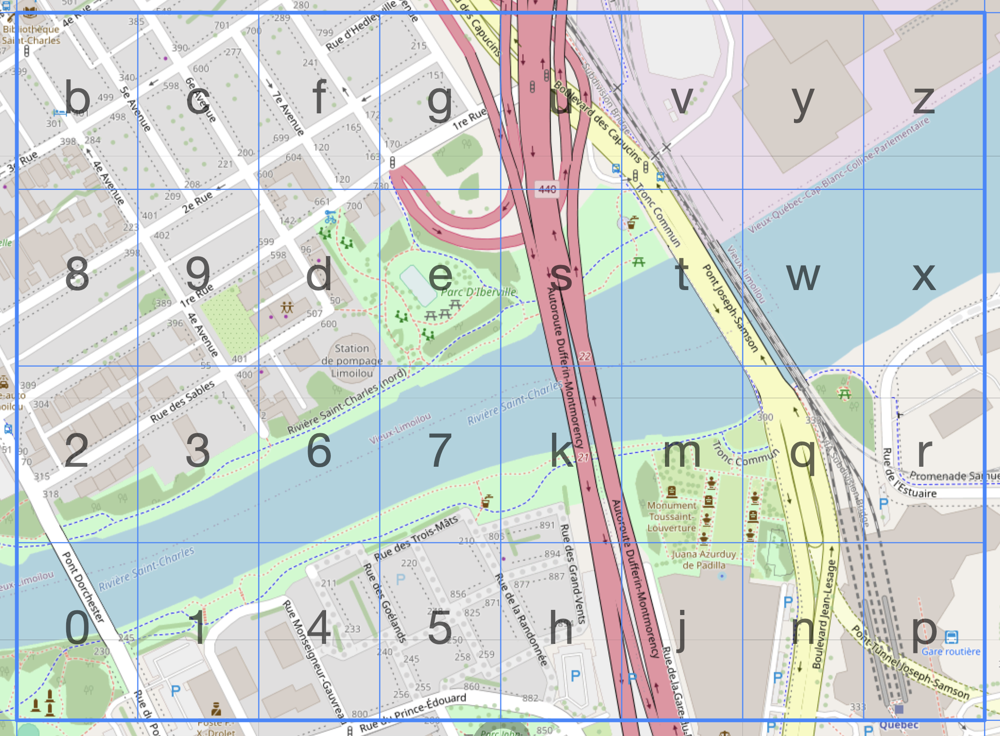
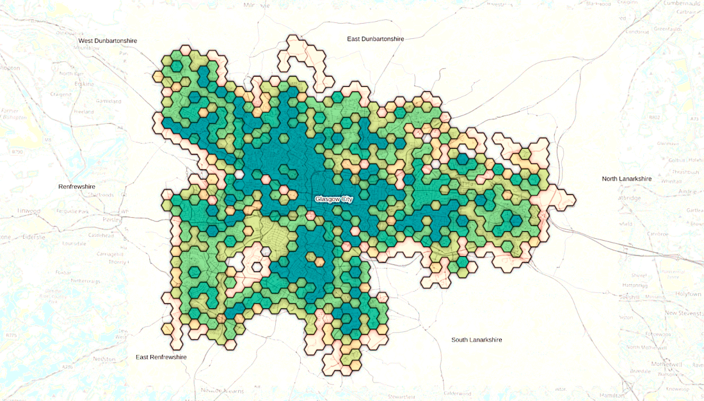
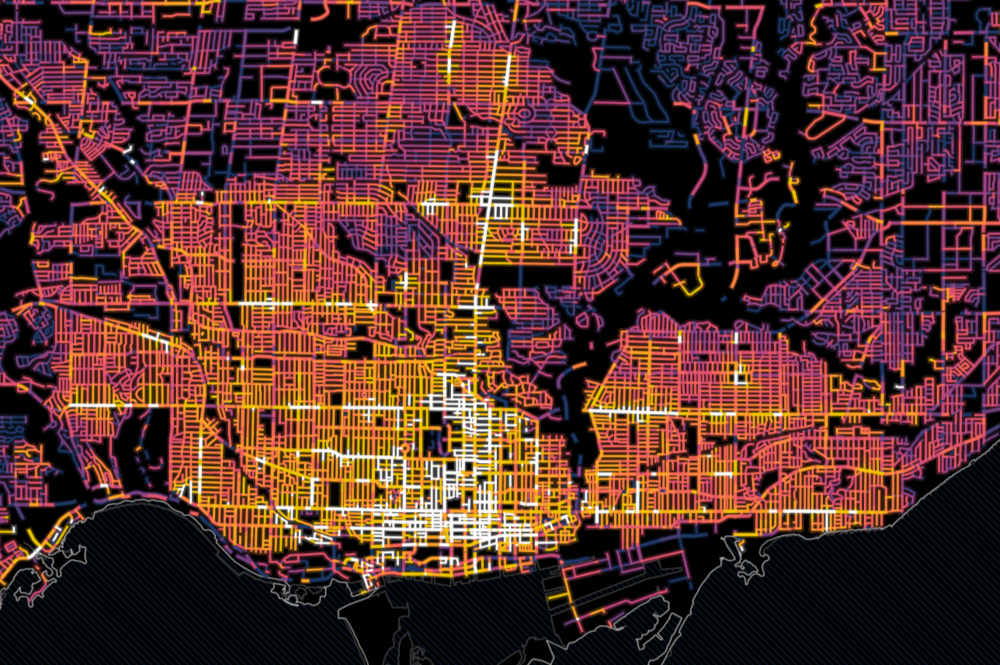
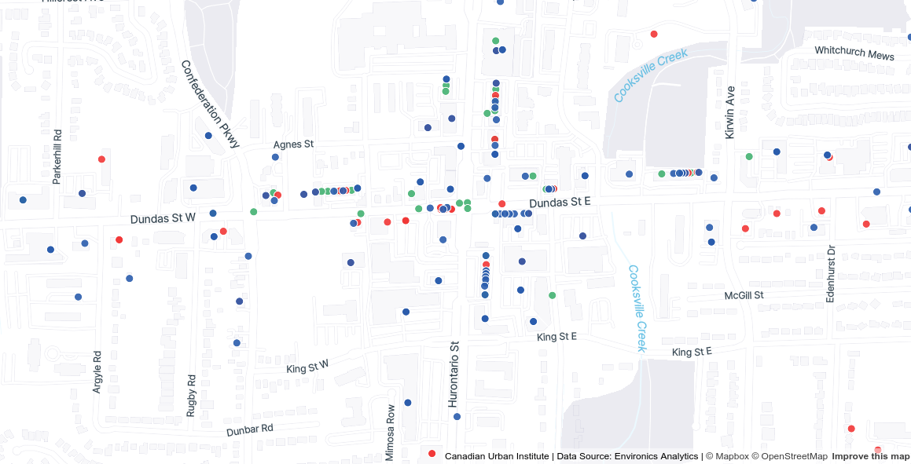
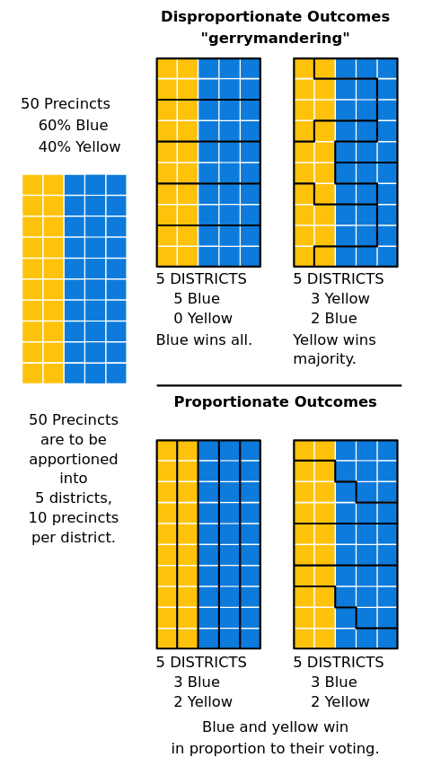

Measuring the city: metrics and indicators
This page covers 1) common metrics and indicators used in urban analysis, 2) spatial units and measures of aggregation often used for urban analysis, and 3) limitations and biases for working with urban datasets to keep in mind when working with urban data.
Common metrics and indicators for urban analyses
The table below lists examples of variables/metrics that are used in urban analyses, grouped by topic.
| Topic | Common metrics |
|---|---|
| People / socioeconomics | - Population density (e.g., population per square kilometer) - Median income - Race/ethnicity - Displacement risk - Social vulnerability index - Population change - Inequality metrics (e.g., Gini index - US & Canada) - Crime rate - Education level (e.g., % with bachelor’s degree, master’s degree) - Dissimilarity index of racial segregation - Voting patterns (e.g., in Toronto) |
| Housing | - % owners/renters - Median rent & home value - Vacancy rate - Cost burden - Core housing need - Number of units built or permits issued (e.g., Canadian ADU analysis; market-rate housing in the Bay Area) |
| Land use | - Walk score - Entropy index for land use mix - Change in land cover (or forest) - Zoning (e.g., zoning policy changes; residential zoning in Canadian cities) |
| Economics / employment | Job density (e.g., Longitudinal Employer-Household Dynamics in the US; Canadian Employer-Employee Dynamics Database in Canada) - Commuting patterns - Venture capital investment by city - Sales by sector downtown - Downtown recovery post-pandemic (e.g., trends; Urban Activity Atlas) |
| Transportation | - Commute mode (e.g., % of people by census tract who commute via public transit vs car) - Public transit accessibility (e.g., “walkshed” around transit stations; % of population within given distance of rail station; population near individual transit stations) - E-bike trip distance - Bike share trips in Toronto - Traffic violations |
| Environment | - Emissions/air pollution) - Urban heat (e.g., heat exposure in Toronto) - Greenness) - Park access (e.g., distance to nearest park) - Flood maps (e.g., Toronto; FEMA; Canada) - Tree canopy coverage |
| Health | - Life expectancy - Prevalence of chronic diseases (e.g., diabetes, asthma) |
Common spatial units and measures of aggregation
Urban data is often linked to specific places. This is often called spatial or geographic data.
When analyzing spatial data, our analysis is often at the level of specific spatial units or unit of aggregations. Sometimes our data is directly collected at these units, while sometimes it is useful to aggregate large datasets to these units to help analyses and visualizations. Below are spatial units and types of encoding that are often used for collecting and analyzing urban data.
In our notebook on spatial data and GIS, we go into details on how different spatial data is structured, and how we can begin to view, explore, and analyze different data in GIS.
Administrative or political boundaries
Political boundaries that delineate jurisdictions for different levels of government, from national down to local levels. Countries, provinces or states, counties, municipalities, electoral districts or city wards, and within cities, neighbourhood planning areas, are all examples of commonly used spatial units.
Census geographies
National censuses aggregate data to a variety of spatial units ranging in size, many are the same as administrative and political boundaries, as well as many smaller-geography boundaries that are super useful for urban- and neighbourhood-scale maps and analyses. Census tracts (usually in the range of 2,500 and 8,000 persons) and Dissemination Areas (400 to 700 persons) are two scales that are often used. Check out (Statistics Canada documentation) or see our notebook on Canadian census data for more information.

Grids
A grid is repetitive tesselation spread across the surface of a map. Grids are used in spatial analysis when existing boundaries are unavailable, unsuitable, or when evenly sized, uniform areas are required. Geohashes, which uniquely identify specific regions according to their latitude and longitude everywhere on Earth, are one type of commonly used grid. Grids do not have to 4-sided.

Triangular and hexagonal grids are often used for some studies. Hexagon’s are often recommended since they are the regular polygon with the most sides (i.e. can closest represent a circle), that can tesselate without any gaps.

Streets
While streets are often added to maps to provide geographic context, streets can also be their own unit of analysis. For example, traffic flow could be measured on street segments throughout a city. In the image below, streets are coloured by how many parking tickets that they have.

Addresses
Some urban data is measured or collected at the address level. For example, address of businesses, non-profits, or community facilities. To map them and compare with other spatial data, addresses are often geocoded, where their names are converted into geographic coordinates (latitude and longitude). See our Spatial data and GIS tutorial for more.

Biases and limitations of spatial data
When collecting and analyzing data, it is important to verify the quality of the dataset. Some data is incomplete or has missing values, which can bias the results, especially if data from certain categories is missing disproportionately. For example, if income data is missing more often for lower-income individuals, the results may overestimate average income and under-represent vulnerable populations.
These are a few important sources of bias or limitations when working with spatial data that are super important to be aware of when working with data linked to places.
Self-reporting bias which is when individuals report inaccurate information about themselves in a survey. This can be intentional (e.g., under-reporting income or over-reporting education) or unintentional (e.g., forgetting details). This can lead to biases in the final dataset and any subsequent analysis.
Ecological fallacy is the phenomenon of drawing conclusions about individuals based on the group they belong to. For example, one might infer that everyone in a census tract with an overall high median income is wealthy. Although the median income is high, there may be low income residents who live in the tract who are not close to the median.
[Edge effects] in spatial analysis refer to the limitations or distortions that occur at the boundaries of a study area. They can bias results or reduce accuracy, especially when spatial patterns or processes extend beyond the area being analyzed.. For example, let’s say you were mapping access to healthy food in a city. Your map may show that one corner of your city does not have a grocery store, leading to a conclusion of it being a food dessert. But if you didn’t consider grocery stores just outside the edge or boundary of your city adjacent to this corner, this may not be the case.
Modifiable areal unit problem (MAUP) is another source of bias when working with spatial data. It is a form of statistical bias that results from the fact that changing the scale or shape of aggregation units leads to different results. Gerrymandering is a classic example of intentional MAUP to obtain specific voting outcomes. Check out the graphic below, we can see the results of how different spatial units are arranged would impact the overall results of an election. Overall, it is important to think critically when working with different spatial units to avoid misrepresenting data or cherry-picking results.
